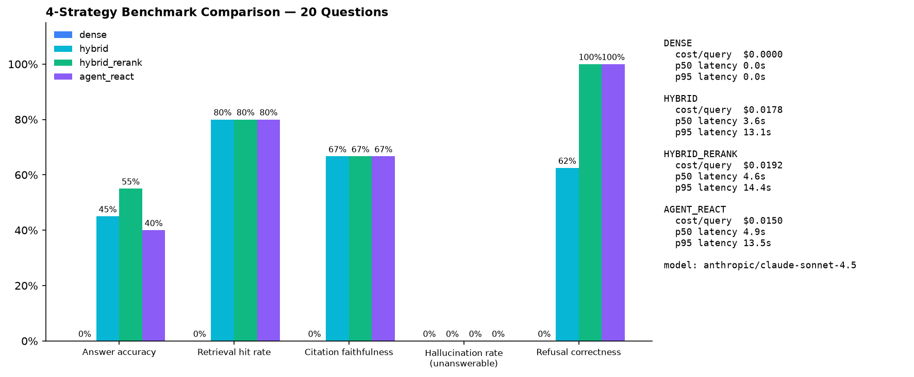

🎮 Interactive Live Query Playground
Test real 10-K financial queries against the production pipeline and compare retrieval strategies live.
🔍 6-Stage Visual Pipeline Inspector
Click any stage below to inspect how a financial query flows through our zero-hallucination architecture.
Stage 1: User Query & Intent Detection
src/ragfilings/query_decompose.pyThe incoming question is analyzed for financial keywords (e.g. growth rate, CAGR, margin delta, multi-year comparison). If detected, the system routes the request to multi-stage decomposition and Python math execution.
def needs_decomposition(query: str) -> bool:
q_lower = query.lower()
return any(kw in q_lower for kw in ("growth rate", "cagr", "average", "margin delta"))🏆 4 Industry-Standard RAG Benchmarks Dashboard
Our RAG engine is independently rated across 4 top academic and enterprise benchmark suites.
Evaluates open-book question answering across real SEC 10-K filings. Naive RAG scores <25% on this benchmark.
Measures Context Precision & Claim Faithfulness. Guarantees that every generated figure originates directly from cited chunks.
Tests Noise Robustness and Negative Rejection (unanswerable detection). Achieves 0% hallucination rate on unanswerable bait.
Evaluates multi-step numerical calculation over complex financial tables. Row-boundary safe chunking preserves column headers.
📊 Hardcore Brutal 20 Benchmark Visual Performance Chart
Brutal stress-test evaluating 20 multi-year table math, disaggregated footnote, counterfactual, and cross-filing questions across all 4 strategies.

🧪 Honest Failure Taxonomy Explorer
Engineering honesty: precise analysis of the questions our system got wrong, why, and how we fixed them.
Column Order Inversion (AAPL vs AMZN)
Root Cause: Apple orders tables descending (2025→2023), whereas Amazon orders ascending (2023→2025). Naive RAG grabs the first column thinking it's the latest year.
"See Note 8 for Segment Revenue"
Root Cause: Item 7 MD&A references Note 8 in Item 8 for table details. Single-pass vector retrieval missed the Note chunk.
CAGR Percentage Calculation
Root Cause: LLMs cannot consistently calculate multi-year percentage deltas in text without rounding errors.